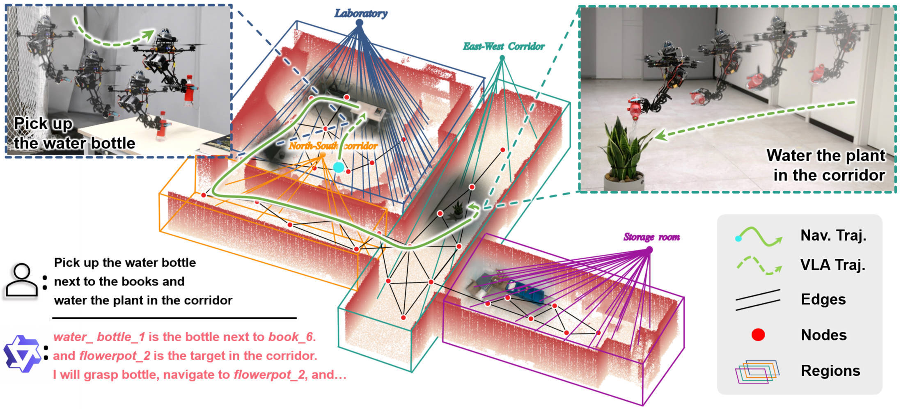
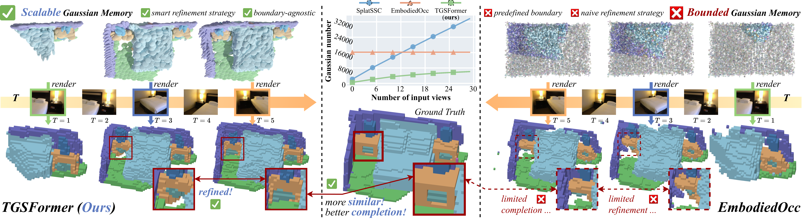
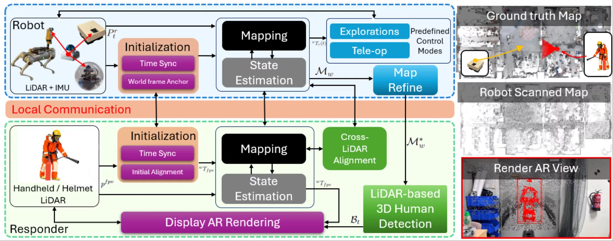

From Local Whole-Body VLA Behaviors to Scene-Scale Aerial Manipulation


I am currently pursuing an M.Sc. in Electronics Technology at the School of Electrical and Electronic Engineering, Nanyang Technological University, Singapore. I conduct research at the NTU Internet of Things Lab and CARTIN, advised by Prof. Lihua Xie and working closely with my senior collaborator Rui Jin.
My research explores how agents perceive, reason, plan, and interact in real-world environments, spanning embodied intelligence and reliable autonomous robotic systems. I currently focus on vision-language-action (VLA) models for aerial manipulation.
目前，我在新加坡南洋理工大学电气与电子工程学院攻读电子技术专业硕士（M.Sc. in Electronics Technology），并在 NTU Internet of Things Lab 与先进机器人技术创新中心（CARTIN）开展研究，师从谢立华教授，并与金锐师兄紧密合作。
我的研究探索智能体如何在真实环境中进行感知、推理、规划与交互，涵盖具身智能与可靠的自主机器人系统。目前，我主要聚焦于面向空中操作的视觉—语言—动作（VLA）模型。


IEEE/CVF Conference on Computer Vision and Pattern Recognition (CVPR), 2026 | paper | pdf

Python · Robotics Infrastructure
Integration tooling for Hitachi elevator Common Node interfaces, including status inspection, control workflows, and an HTTP/WebSocket adapter for robot elevator transactions.

Patent accepted
A human-robot collaboration framework that fuses responder- and robot-mounted LiDAR sensing to visualize occluded people and hazards.